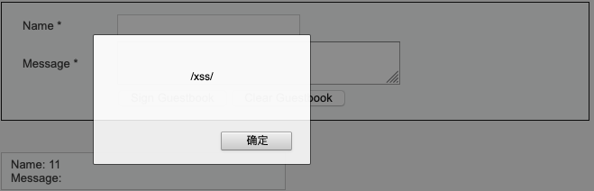
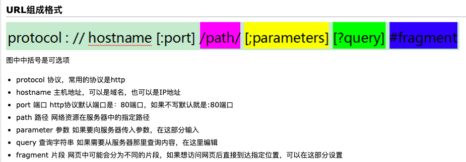
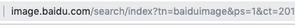
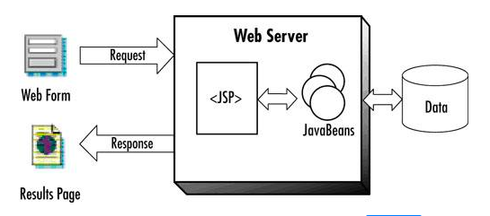
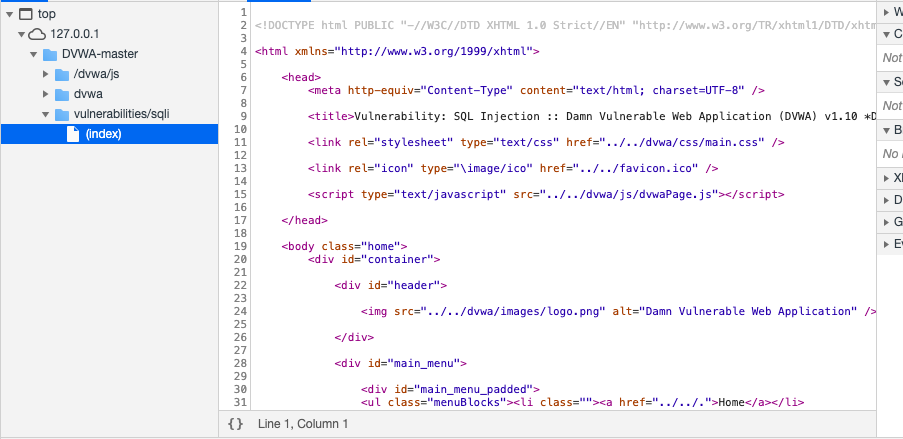
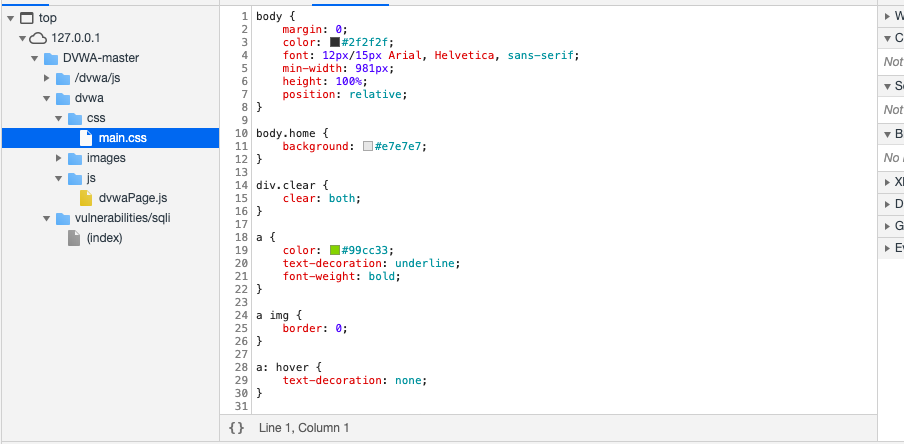
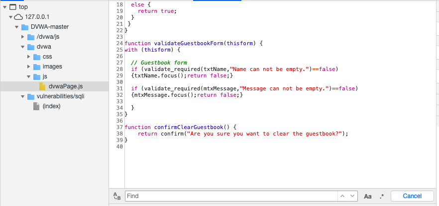
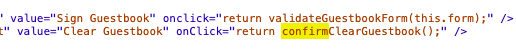
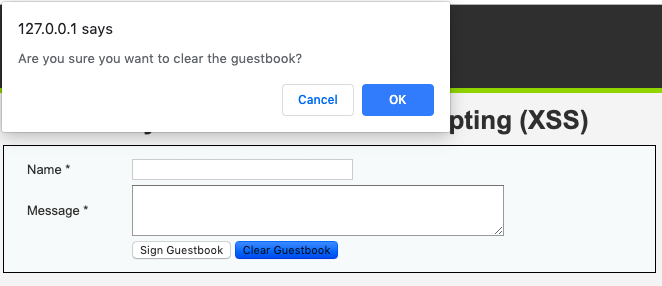
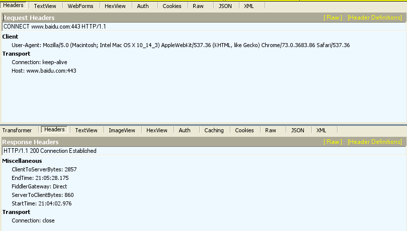

<!DOCTYPE html>
<html>
<head><meta name="generator" content="Hexo 3.8.0">
  <meta charset="utf-8">
  

  
  <title>Web安全零基础入门 | 深渊</title>
  <meta name="viewport" content="width=device-width, initial-scale=1, maximum-scale=1">
  <meta name="description" content="零、漏洞是什么？它在哪里？我该怎么操作？图1.我们完成了一次存储型XSS攻击。 Web漏洞是什么？通过传入恶意脚本/文件的形式进行权限获取、数据窃取、业务中断等行为。 漏洞出现在哪里？用户和页面的交互行为。     我该怎么进行攻击？构造恶意URL、填写表单/评论等内容时注入恶意脚本、上传恶意文件等。当然，不论在哪里做手脚，我们植入的恶意代码出了我们的PC都是以http报文的形式传过去的，所以我们">
<meta name="keywords" content="CTF">
<meta property="og:type" content="article">
<meta property="og:title" content="Web安全零基础入门">
<meta property="og:url" content="http://yoursite.com/2019/03/29/Web安全零基础入门/index.html">
<meta property="og:site_name" content="深渊">
<meta property="og:description" content="零、漏洞是什么？它在哪里？我该怎么操作？图1.我们完成了一次存储型XSS攻击。 Web漏洞是什么？通过传入恶意脚本/文件的形式进行权限获取、数据窃取、业务中断等行为。 漏洞出现在哪里？用户和页面的交互行为。     我该怎么进行攻击？构造恶意URL、填写表单/评论等内容时注入恶意脚本、上传恶意文件等。当然，不论在哪里做手脚，我们植入的恶意代码出了我们的PC都是以http报文的形式传过去的，所以我们">
<meta property="og:locale" content="default">
<meta property="og:image" content="http://yoursite.com/img/websec1.png">
<meta property="og:image" content="http://yoursite.com/2019/03/29/Web安全零基础入门/PastedGraphic5.png">
<meta property="og:image" content="http://yoursite.com/2019/03/29/Web安全零基础入门/ScreenShot2019-03-29at142823.png">
<meta property="og:image" content="http://yoursite.com/2019/03/29/Web安全零基础入门/ScreenShot2019-03-29at145024.png">
<meta property="og:image" content="http://yoursite.com/2019/03/29/Web安全零基础入门/PastedGraphic6.png">
<meta property="og:image" content="http://yoursite.com/2019/03/29/Web安全零基础入门/ScreenShot2019-03-29at180401.png">
<meta property="og:image" content="http://yoursite.com/2019/03/29/Web安全零基础入门/PastedGraphic1.png">
<meta property="og:image" content="http://yoursite.com/2019/03/29/Web安全零基础入门/PastedGraphic2.png">
<meta property="og:image" content="http://yoursite.com/2019/03/29/Web安全零基础入门/PastedGraphic3.png">
<meta property="og:image" content="http://yoursite.com/2019/03/29/Web安全零基础入门/ScreenShot2019-03-29at182542.png">
<meta property="og:image" content="http://yoursite.com/2019/03/29/Web安全零基础入门/ScreenShot2019-03-29at211412.png">
<meta property="og:updated_time" content="2019-03-29T15:19:17.344Z">
<meta name="twitter:card" content="summary">
<meta name="twitter:title" content="Web安全零基础入门">
<meta name="twitter:description" content="零、漏洞是什么？它在哪里？我该怎么操作？图1.我们完成了一次存储型XSS攻击。 Web漏洞是什么？通过传入恶意脚本/文件的形式进行权限获取、数据窃取、业务中断等行为。 漏洞出现在哪里？用户和页面的交互行为。     我该怎么进行攻击？构造恶意URL、填写表单/评论等内容时注入恶意脚本、上传恶意文件等。当然，不论在哪里做手脚，我们植入的恶意代码出了我们的PC都是以http报文的形式传过去的，所以我们">
<meta name="twitter:image" content="http://yoursite.com/img/websec1.png">
  
    <link rel="alternate" href="/atom.xml" title="深渊" type="application/atom+xml">
  
  
    <link rel="icon" href="/favicon.png">
  
  
    <link href="//fonts.googleapis.com/css?family=Source+Code+Pro" rel="stylesheet" type="text/css">
  
  <link rel="stylesheet" href="/css/style.css">
</head>
</html>
<body>
  <div id="container">
    <div id="wrap">
      <header id="header">
  <div id="banner"></div>
  <div id="header-outer" class="outer">
    <div id="header-title" class="inner">
      <h1 id="logo-wrap">
        <a href="/" id="logo">深渊</a>
      </h1>
      
    </div>
    <div id="header-inner" class="inner">
      <nav id="main-nav">
        <a id="main-nav-toggle" class="nav-icon"></a>
        
          <a class="main-nav-link" href="/">Home</a>
        
          <a class="main-nav-link" href="/archives">Archives</a>
        
      </nav>
      <nav id="sub-nav">
        
          <a id="nav-rss-link" class="nav-icon" href="/atom.xml" title="RSS Feed"></a>
        
        <a id="nav-search-btn" class="nav-icon" title="Search"></a>
      </nav>
      <div id="search-form-wrap">
        <form action="//google.com/search" method="get" accept-charset="UTF-8" class="search-form"><input type="search" name="q" class="search-form-input" placeholder="Search"><button type="submit" class="search-form-submit">&#xF002;</button><input type="hidden" name="sitesearch" value="http://yoursite.com"></form>
      </div>
    </div>
  </div>
</header>
      <div class="outer">
        <section id="main"><article id="post-Web安全零基础入门" class="article article-type-post" itemscope itemprop="blogPost">
  <div class="article-meta">
    <a href="/2019/03/29/Web安全零基础入门/" class="article-date">
  <time datetime="2019-03-29T12:46:25.000Z" itemprop="datePublished">2019-03-29</time>
</a>
    
  </div>
  <div class="article-inner">
    
    
      <header class="article-header">
        
  
    <h1 class="article-title" itemprop="name">
      Web安全零基础入门
    </h1>
  

      </header>
    
    <div class="article-entry" itemprop="articleBody">
      
        <p>零、漏洞是什么？它在哪里？我该怎么操作？<br><br><br>图1.我们完成了一次存储型XSS攻击。</p>
<pre><code>Web漏洞是什么？通过传入恶意脚本/文件的形式进行权限获取、数据窃取、业务中断等行为。
漏洞出现在哪里？用户和页面的交互行为。
    我该怎么进行攻击？构造恶意URL、填写表单/评论等内容时注入恶意脚本、上传恶意文件等。当然，不论在哪里做手脚，我们植入的恶意代码出了我们的PC都是以http报文的形式传过去的，所以我们不妨直接在http报文里做手脚。http的概念稍后会讲。

输入一个网址并回车的时候，后台发生了什么？我们是怎么把数据交给后台的？点击各种按钮的时候发生了什么？
</code></pre><p>我们常说的地址栏里的东西叫URL，统一资源定位符，互联网上的每个文件都有一个唯一的URL，它包含的信息指出文件的位置以及浏览器应该执行何种动作。<br><br><br>    图2.URL格式和一个例子</p>
<p>hostname，如果是特定服务器提供业务，那么这里填ip地址就可以。但这样的问题是，难以让用户记住，所以，我们常用域名（如<a href="http://www.baidu.com）来代替他们。但是，我们输入域名的话，浏览器要怎么知道该数据要传递到哪里呢——DNS服务。" target="_blank" rel="noopener">www.baidu.com）来代替他们。但是，我们输入域名的话，浏览器要怎么知道该数据要传递到哪里呢——DNS服务。</a><br>DNS：是一个分布式数据库，存储着域名和IP地址之间的映射关系。使用命令ping就可以通过DNS服务解析域名，我们把向DNS服务器提交域名，得到IP地址的行为称作域名解析。<br>端口：当数据包到达我们电脑的时候，我们怎么知道把数据交给哪个应用程序或者说进程来处理呢？答案是看端口号。比如，http服务的端口号是80，那么我们收到一个http报文，解析它的报文头，发现端口号是80，就把这个数据包分流到浏览器，把报文头拆掉，提取出数据来（比如，数据是一个.html文件），浏览器对.html文件进行解释，这样就得到我们的网页了。<br>浏览器：我们的网页是.html文件，.html文件由html语言写成，是一种标签语言。浏览器本质是个解释器，负责把.html文件里的标签解释成可见的内容。html我们之后再讲。<br>路径：一个域名对应着服务器上的一个根目录，里面有很多的子文件夹，存放着不同的业务文件。在上面的例子中，我们进入了search文件夹，这里面可能存放着大量图片数据。<br>？问号连接表单里的选项，我们在网页上填form（form是html里的概念），再按回车，那么URL里就会用?a=xxx的方式告诉服务器，请把变量a的值设为xxx。所以，我们可以再xxx里做文章。【所有用户填进来的内容，都是不安全的！！】</p>
<p>#定位符，作用是告诉客户端的浏览器，把当前页面定到哪个位置上。比如网页分了a,b,c三个段，我们在url上添加#b，网页就会直接定位到b段。特点是#后的内容只交给客户端的浏览器，而不传到服务器上。<br>&amp;分隔符，我们传进去很多数据，格式都是a=xxx，a叫做键名，xxx叫做键值，合称键，键本身是个关联数组。键之间通过&amp;分开。</p>
<p>一、网络通信是怎么进行的？以HTTP服务为例<br><br>图3. 客户端（浏览器）——Internet（网线&amp;路由器）——服务器——数据库</p>
<p>前面说的数据包、http服务、http协议都是啥？客户端和服务器端之间的通信是怎么进行的？<br>    TCP/IP四层网络模型：<br>名称                          实体和作用                              使用协议                        地址名             数据名<br>应用层<br>应用程序<br>http、ftp等<br>端口<br>报文<br>传输层<br>提供端到端通信<br>TCP、UDP<br>端口<br>报文<br>网络层<br>数据在网络中的活动<br>IP、ICMP<br>IP地址<br>数据包<br>链路层<br>驱动程序（比如网卡），软硬件间的接口<br>以太网、IEEE、PPP<br>MAC地址<br>数据帧<br>过程：一般地，客户端应用层—客户端传输层—客户端网络层—客户端链路层——网线——服务器端链路层—服务器端网络层—服务器端传输层—服务器端应用层。这个四层模型是一个抽象概念，实际上有很多协议的所属层次是模糊的。<br>我们以【HTTP-TCP-IP-以太网】这条线为例。<br>——————————————————————————————————————————<br>客户端应用层：[数据]——&gt;[HTTP头][数据]=HTTP报文<br>客户端传输层：[HTTP头][数据]——&gt;[TCP头][HTTP头][数据]=承载HTTP的TCP报文<br>            （[HTTP头][数据]整体称为TCP的数据部分）<br>……<br>————在电缆/光缆中传输————<br>……<br>服务器端网络层：[IP头][TCP头][HTTP头][数据]——&gt;[TCP头][HTTP头][数据]<br>……<br>服务器端应用层：[HTTP头][数据]——&gt;[数据]<br>——————————————————————————————————————————</p>
<p>我们在浏览器里填了一项数据递交上去，浏览器就会把这个数据包装成一个HTTP报文，向下交给操作系统内置的传输层（应用层协议由应用程序，如浏览器处理；传输层由操作系统处理；网络层由操作系统和路由器处理；链路层由交换机处理）<br>传输层根据报文的数据生成一个TCP头，之后把报文发给网络层，加IP头（TCP报文+IP头=数据包，当然这些叫法都是无所谓的，各有习惯），再交给路由器，路由器根据IP头部的信息进行转发，链路层负责衔接线路和网络层，对数据包加以太头，称为数据帧。最终在线路里流动，此时数据叫做比特流。</p>
<p>端：通信的两端通常叫做客户端和服务器端（也称前端和后端）。在具体的通信行为中，又被称作发送方和接收方。<br>封装和解封：逐层加头和拆头的过程。</p>
<p>机器是怎么知道把数据交给谁的？<br>笼统地讲，我们需要一系列的地址来确定对方的坐标。<br>坐标可分为：</p>
<pre><code>1.    协议号，每层都使用若干种协议，每个协议都有自己的协议号。协议号标志当前数据使用的协议是什么？而后交给特定的设备处理。下面我们介绍几个特定层使用的地址。
⁃    常用协议号：HTTP=80、TCP=6、IP=4、UDP=17、FTP=20/21。
2.    MAC地址：也叫物理地址，每台可联网设备出厂的时候都会有这样一个地址，48bit，厂家向MAC地址管理组织（IEEE）申请一个地址段，然后它就可以给生产的设备添加该地址段的MAC地址了。
3.    IP地址：我们在网络上产生各种行为的时候需要一个身份，这个身份由IP地址进行标识。一般也需要向管理组织申请。例外是私有网段、环回地址等，按下不表。针对IP层（网络层）的攻击行为称为网络攻击，如DDoS，我们在这里先了解Web安全（应用层）的行为，IP本身的内容非常丰富。IP地址是最重要的！
4.    端口：报文到达接收方计算机后，计算机应该交给哪个程序处理报文携带的数据？这是由端口决定。
⁃    0~1023称为知名端口号，计算机的通用业务，像是HTTP（超文本传输协议，端口80）、FTP（文件传输协议，端口20/21）即在1~1024中选择端口。
⁃    1024~49151是注册端口号，软件通常会使用特定的端口，比如福昕阅览器占用了4000。
⁃    49152~65535是临时端口号，网络游戏经常会使用这些端口，随机使用，即用即弃。
</code></pre><p> 二、我都看不懂那些代码，前后端的这些代码都包括些啥？HTTP又怎么说？<br>    按照前文的划分，我们需要学习的前置内容包含，客户端（前端）、通信过程（http/https协议）和服务器端（后端）：<br>    前端：HTML/CSS/JavaScript<br>    后端：PHP/MySQL<br>    协议：HTTP/HTTPS</p>
<p>前端：HTML/CSS/JavaScript<br>    前端即客户端，是用户可见的部分。HTML是一种标签语言，负责整个页面的架构（网页=浏览器对html文件进行解释），CSS负责效果的渲染，包括管理一个元素的背景、字体、动画等等，如果一个网页看上去很酷炫，那么这个页面对应的html文件所引用的css文件一定很复杂。虽然我们也可以在html文件里直接进行渲染，但为了html文件的可读性和简洁性，我们把内容渲染这个部分单独拿了出来，做成css文件，通过html文件对其进行引用来实现渲染；JavaScript是一门脚本语言，负责用户和服务器进行交互，实现网页的动态效果。<br>    总结，HTML负责结构，CSS负责渲染，JavaScript负责动作。在互联网发展的历程中，这三者的分离降低了前端的耦合度，使互联网开发和管理的效率大大提高。学习建议：HTML/CSS可以参考w3school的在线教程，随便看看就行。JavaScript参考《JavaScript DOM编程艺术》，前几章看看也就差不多了。前端三兄弟不需要安装任何环境，只需要文本编辑器（推荐Vim）和浏览器（推荐Firefox）。<br>【HTML源码】<br><br>    在浏览器界面按F12，我们得到上图。左端展示的是这个ip下的文件树，右边是该页面的HTML源码。注意看，11行引用了.css文件（CSS渲染），15行引用了.js文件（JavaScript脚本）。HTML源码和它所引用的.css和.js文件共同构成了当前页面。<br>    <title>Vulnerability</title>  这是HTML的基本语法，<title>是标签的开始，</title>是结束，中间夹着的内容就是当前页面的标题。<br>【CSS源码】<br><br>    这是该页面引用的.css文件，我们按F12可以直接得到HTML源码，根据源码的提示，我们在指定的路径找到了html源码所引用的.css文件。可以看到，body采用了无边距，2f2f2f色号，Arial字体。<br>【JavaScript源码和效果】<br><br>    <br>    第一张图是页面引用的.js脚本，在37、38写了简单函数confirmClearGuestbook( )。它在html（第二张图）里被调用，效果是，点击Clear Guestbook按钮的时候，跳出信息，让用户确认是否要清空Guestbook，见下。<br></p>
<pre><code>补充：计算机都有哪些语言？标签语言、脚本语言都是啥？C属于哪一类？
用于为计算机下达指令的语言大概有这几类，从低级到高级，分别是汇编语言、程序语言、脚本语言和高级语言。语言等级越低，就越偏底层偏硬件，掌握难度通常也更大，为实现同样功能编写需要的时间更多，但执行效率更高。
汇编语言是直接和计算机指令挂钩的；程序语言是架构程序/软件使用的语言，比如C/C++/Java，这些程序会最终会被编译成可执行文件，进而调用计算机指令，处理程序语言的工具是编译器；脚本语言如JavaScript、PHP、Python是写脚本（工具）的，适合快速开发一些短小精悍的工具，特点是编写快、执行慢，处理脚本语言的工具是解释器，解释器通常由C等程序设计语言实现；高级语言如HTML、Matlab，特点是集成度极高，但只能在特定软件上使用。
</code></pre><p>后端：PHP/MySQL<br>现在我们搞清楚了前端的结构，也搞清楚了通信的过程，那么，我们提交一项内容，在服务器端到底发生了什么？<br>PHP，在服务器端运行的脚本语言，处理后端的各种动作以及和数据库交互。注意，服务器和数据库也是分离的，在互联网和计算机的各种系统里，我们经常能看到各种分离的架构，分离有利于降低耦合度，这是我们不变的追求，耦合度降低使得管理、纠错的成本大幅降低。<br><figure class="highlight php"><table><tr><td class="gutter"><pre><span class="line">1</span><br><span class="line">2</span><br><span class="line">3</span><br><span class="line">4</span><br><span class="line">5</span><br><span class="line">6</span><br><span class="line">7</span><br><span class="line">8</span><br><span class="line">9</span><br><span class="line">10</span><br><span class="line">11</span><br><span class="line">12</span><br><span class="line">13</span><br><span class="line">14</span><br><span class="line">15</span><br><span class="line">16</span><br><span class="line">17</span><br><span class="line">18</span><br><span class="line">19</span><br><span class="line">20</span><br><span class="line">21</span><br><span class="line">22</span><br><span class="line">23</span><br><span class="line">24</span><br></pre></td><td class="code"><pre><span class="line"><span class="meta">&lt;?php</span> </span><br><span class="line"></span><br><span class="line"><span class="keyword">if</span>( <span class="keyword">isset</span>( $_REQUEST[ <span class="string">'Submit'</span> ] ) ) &#123; </span><br><span class="line">    <span class="comment">// Get input </span></span><br><span class="line">    $id = $_REQUEST[ <span class="string">'id'</span> ]; </span><br><span class="line"></span><br><span class="line">    <span class="comment">// Check database </span></span><br><span class="line">    $query  = <span class="string">"SELECT first_name, last_name FROM users WHERE user_id = '$id';"</span>; </span><br><span class="line">    $result = mysqli_query($GLOBALS[<span class="string">"___mysqli_ston"</span>],  $query ) <span class="keyword">or</span> <span class="keyword">die</span>( <span class="string">'&lt;pre&gt;'</span> . ((is_object($GLOBALS[<span class="string">"___mysqli_ston"</span>])) ? mysqli_error($GLOBALS[<span class="string">"___mysqli_ston"</span>]) : (($___mysqli_res = mysqli_connect_error()) ? $___mysqli_res : <span class="keyword">false</span>)) . <span class="string">'&lt;/pre&gt;'</span> );</span><br><span class="line"></span><br><span class="line">    <span class="comment">// Get results </span></span><br><span class="line">    <span class="keyword">while</span>( $row = mysqli_fetch_assoc( $result ) ) &#123; </span><br><span class="line">        <span class="comment">// Get values </span></span><br><span class="line">        $first = $row[<span class="string">"first_name"</span>]; </span><br><span class="line">        $last  = $row[<span class="string">"last_name"</span>]; </span><br><span class="line"></span><br><span class="line">        <span class="comment">// Feedback for end user </span></span><br><span class="line">        <span class="keyword">echo</span> <span class="string">"&lt;pre&gt;ID: &#123;$id&#125;&lt;br /&gt;First name: &#123;$first&#125;&lt;br /&gt;Surname: &#123;$last&#125;&lt;/pre&gt;"</span>; </span><br><span class="line">    &#125; </span><br><span class="line"></span><br><span class="line">    mysqli_close($GLOBALS[<span class="string">"___mysqli_ston"</span>]); </span><br><span class="line">&#125; </span><br><span class="line"></span><br><span class="line"><span class="meta">?&gt;</span></span><br></pre></td></tr></table></figure><br>这段PHP代码就执行了访问数据库中user_id=$id的数据。注意，$id是该php文件里定义的变量，在php里，我们使用前缀$表示变量。<br>在这里，如果不对$id做任何限制的话，那么这里就存在了SQL注入漏洞，我们可以通过修改id的值，把恶意SQL语句注入这段PHP代码，从而获得我们需要的数据。</p>
<p>MySQL，这是我们最常用的一款数据库。它采用了特殊的架构使得我们对数据的增删、搜索变得异常迅速，同时具备完善的权限设置，来保证数据的安全。<br>PHP和MySQL的基本用法请参考《PHP和MySQL Web开发》。</p>
<p>协议：HTTP &amp; HTTPS<br>    •    http=超文本传输协议，几乎所有的Web应用都使用http和https传输信息。<br>    •    https=http+security，在http和TCP之间添加了TLS、SSL协议以确保安全。<br>    •    html=超文本标记语言<br>    •    学习协议的最好方式是亲自抓包分析<br>    我们主要介绍HTTP协议：<br><br>图8.HTTP报文格式。独立行为请求行/应答行，下面是HTTP头部信息。</p>
<pre><code>HTTP是一种无连接的协议，分为请求报文和应答报文。每次发送方发送一个HTTP请求报文，然后接收方回一个应答报文，一来一回构成一个单元。
</code></pre><p>协议分析<br>    请求报文结构：请求行+头部+[正文]。正文是可选的，我们通常用[ ]讲可选的内容括起来。</p>
<pre><code>1.    请求行格式：Method Request-URI HTTP-Version CRLF
⁃    方法，请求的URI（URL是URI的子集），HTTP协议版本（18年更新了http 3.0），CRLF=回车
⁃    常用的方法有GET，POST。
⁃    GET：获取URI标识的资源；
⁃    POST：在URI标识的资源后附加新的资源，比如提交表单；
2.    头部：请求报文可以使用普通头，请求头和实体头，我们主要讲请求头。
⁃    请求头：客户端自身的信息以及向服务器端传递的附加信息。比如客户端使用的硬件名和操作系统，具体见上图。

应答报文结构：状态行+头部+[正文]。
1.    应答头格式：HTTP-Version Status-Code Reason-Phrase CRLF
⁃    中间两项是状态+描述，比如
⁃    200+OK，404+Not Found
2.    头部：应答报文可以使用普通头，应答头和实体头，我们主要讲请求头。
⁃    包含附加的应答信息和服务器自身的信息等。
</code></pre><p>更多的信息请参考wiki <a href="https://en.wikipedia.org/wiki/Hypertext_Transfer_Protocol" target="_blank" rel="noopener">https://en.wikipedia.org/wiki/Hypertext_Transfer_Protocol</a></p>
<p>三、漏洞都有哪些？掌握了上面的基础后，该怎么学习Web安全？<br>    常见漏洞：</p>
<pre><code>1.    XSS。跨站脚本。
⁃    反射型
⁃    存储型
⁃    DOM型
2.    注入。将恶意代码通过变量的形式传递给后端。
⁃    SQL注入。注入恶意SQL代码。
⁃    Command注入。注入恶意Command命令。
3.    文件
⁃    文件包含
⁃    文件上传
4.    暴力破解。通过遍历获取用户密码。
5.    CSRF。跨站请求劫持。
</code></pre><p>另外，OWASP组织每年都会给出当前十大最危险的Web漏洞，我们称作OWASP Top 10。每年的OWASP报告对初学者来说也十分具有参考价值。<br>学习建议：整就牛。找一个靶站，如DVWA，跑一遍教程，然后在i春秋、实验吧等平台刷CTF题目，积累实战经验。教材推荐吴翰清（道哥、刺）写的《白帽子讲Web安全》。</p>
<p>参考资料：<br>Web安全/漏洞：《白帽子讲Web安全》 吴翰清<br>网络原理：《TCP/IP详解 卷一》<br>HTTP协议/URL：Wiki<br>HTML/CSS：w3school在线教程<br>JavaScript：《JavaScript DOM编程艺术》<br>PHP/MySQL：《PHP和MySQL Web开发》</p>

      
    </div>
    <footer class="article-footer">
      <a data-url="http://yoursite.com/2019/03/29/Web安全零基础入门/" data-id="cjtu7qjf900024i3eqww32ves" class="article-share-link">Share</a>
      
      
  <ul class="article-tag-list"><li class="article-tag-list-item"><a class="article-tag-list-link" href="/tags/CTF/">CTF</a></li></ul>

    </footer>
  </div>
  
    
<nav id="article-nav">
  
  
    <a href="/2019/03/20/experience/" id="article-nav-older" class="article-nav-link-wrap">
      <strong class="article-nav-caption">Older</strong>
      <div class="article-nav-title">我的大学经历</div>
    </a>
  
</nav>

  
</article>

</section>
        
          <aside id="sidebar">
  
    

  
    
  <div class="widget-wrap">
    <h3 class="widget-title">Tags</h3>
    <div class="widget">
      <ul class="tag-list"><li class="tag-list-item"><a class="tag-list-link" href="/tags/CTF/">CTF</a></li></ul>
    </div>
  </div>


  
    
  <div class="widget-wrap">
    <h3 class="widget-title">Tag Cloud</h3>
    <div class="widget tagcloud">
      <a href="/tags/CTF/" style="font-size: 10px;">CTF</a>
    </div>
  </div>

  
    
  <div class="widget-wrap">
    <h3 class="widget-title">Archives</h3>
    <div class="widget">
      <ul class="archive-list"><li class="archive-list-item"><a class="archive-list-link" href="/archives/2019/03/">March 2019</a></li></ul>
    </div>
  </div>


  
    
  <div class="widget-wrap">
    <h3 class="widget-title">Recent Posts</h3>
    <div class="widget">
      <ul>
        
          <li>
            <a href="/2019/03/29/Web安全零基础入门/">Web安全零基础入门</a>
          </li>
        
          <li>
            <a href="/2019/03/20/experience/">我的大学经历</a>
          </li>
        
          <li>
            <a href="/2019/03/09/Why-Blog/">我为什么要搭建博客？</a>
          </li>
        
      </ul>
    </div>
  </div>

  
</aside>
        
      </div>
      <footer id="footer">
  
  <div class="outer">
    <div id="footer-info" class="inner">
      &copy; 2019 翔誉<br>
      Powered by <a href="http://hexo.io/" target="_blank">Hexo</a>
    </div>
  </div>
</footer>
    </div>
    <nav id="mobile-nav">
  
    <a href="/" class="mobile-nav-link">Home</a>
  
    <a href="/archives" class="mobile-nav-link">Archives</a>
  
</nav>
    

<script src="//ajax.googleapis.com/ajax/libs/jquery/2.0.3/jquery.min.js"></script>


  <link rel="stylesheet" href="/fancybox/jquery.fancybox.css">
  <script src="/fancybox/jquery.fancybox.pack.js"></script>


<script src="/js/script.js"></script>


  </div>
</body>
</html>